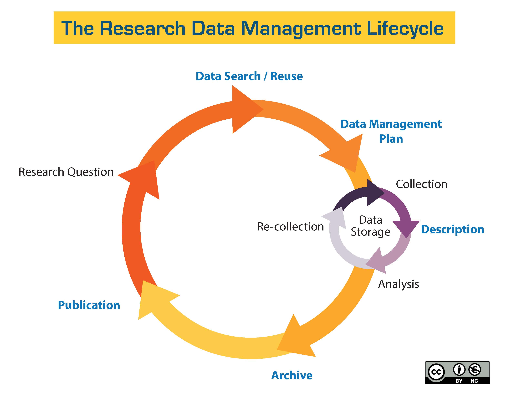
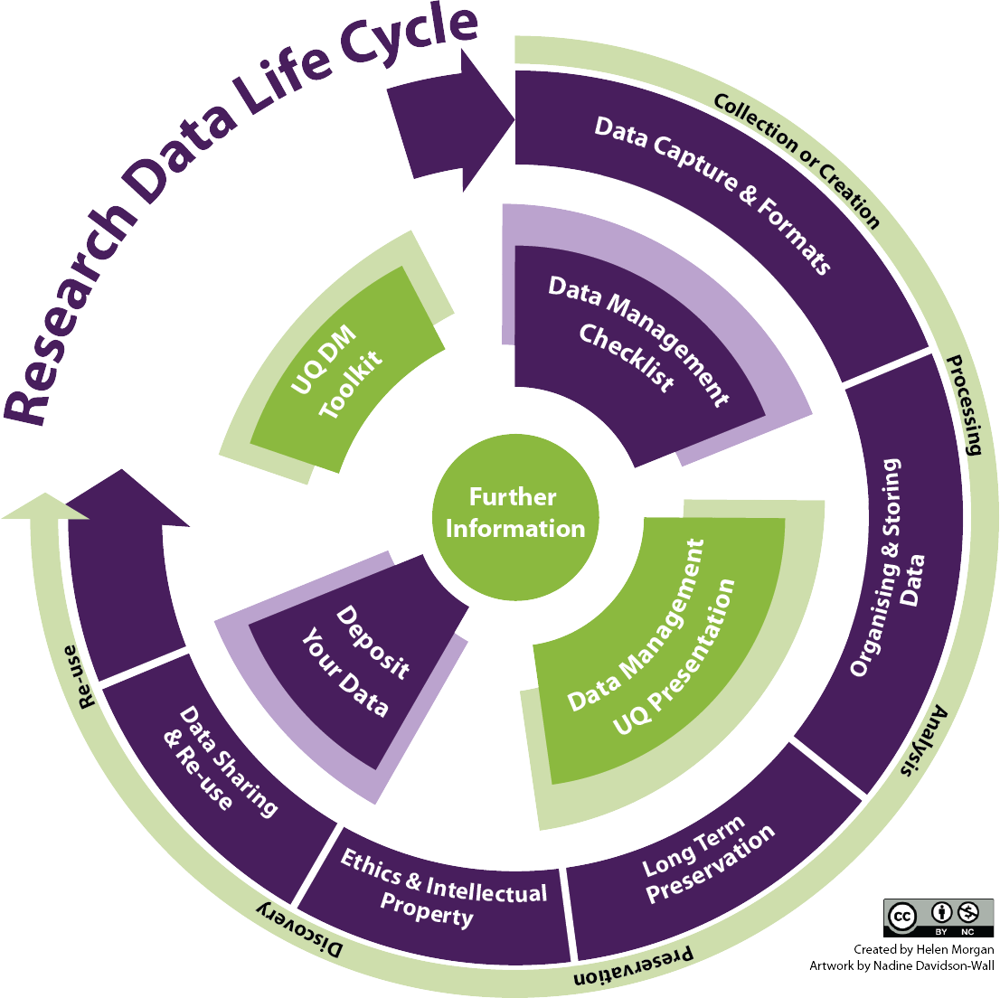

<!doctype html>
<html>
    <head>
        <link rel="stylesheet" href="../../common/css/reveal.css">
        <link rel="stylesheet" href="../../common/css/white.css">
        <link rel="stylesheet" href="../../common/css/overrides.css">
      <script src="../../common/java/print.js"></script>
        <title>Research Data Management - 01</title>
        <meta charset="UTF-8">
    </head>
    <body>
        <div class="reveal">
            <div class="slides">

                <section data-background-image="../../common/assets/images-for-data/DataCurationCover.png">
                  <div style="position: aboslute; top: 0px; left: 0px; width: 100%; height: 100%;">
                    <div style="position: absolute; left: 340px; top: 225px; font-size: 150%; line-height: 100%;"><strong>Data Management in the<br>Research Environment</strong></div>
                    <div style="position: absolute; left: 620px; top: 410px; font-size: 90%">Data Management and Research Design<br><span style="font-size: 90%">Library Workshop Series <script>var today = new Date();document.write(today.getFullYear());</script></span></div>
                    <div style="position: absolute; left: 420px; top: 525px; font-size: 70%; text-align: left"><a href="https://bit.ly/2N7SbVt" style="color: #222 !important; text-decoration: underline;">https://bit.ly/2N7SbVt</a></div>
                    <div style="position: absolute; left: 440px; top: 605px; font-size: 50%; text-align: left">Dr. Timothy Norris - Research Data Scientist - <a href="mailto:tnorris@miami.edu" style="color: #222 !important; text-decoration: underline;">tnorris@miami.edu</a></div>
                  </div>
                </section>

           <!-- ***
                 * outline
                 * -->
                <section>
                  <section>
                    <div style="width: 75%; margin: auto auto auto auto;">
                      <div style="font-weight: bold; font-size: 110%; padding-bottom: 36px;">some things to talk about</div>
                      <div style="font-size: 85%; text-align: left; line-height: 170%;">
                        <table><tr style="border-top: 1px solid black;"><td style="padding-top: 13px;" class="fragment">
                          Why we are here
                          <ul style="margin-left: 30px; font-size: 80%; line-height: 150%;">
                            <li><a href="#/2">Data Deluge?</a></li>
                            <li><a href="#/3">What is Data?</a></li>
                            <li><a href="#/4">Data in the Research Environment?</a></li>
                          </ul>
                        </td><td class="fragment">
                          What we can do 
                          <ul style="margin-left: 30px; font-size: 80%; line-height: 150%;">
                            <li><a href="#/9">Data Management Plans</a></li>
                            <li><a href="#/10">DMP Tools</a></li>
                            <li><a href="#/11">Evaluate a DMP</a></li>
                            <li><a href="#/12">Further Reading</a></li>
                          </ul>
                        </td></tr><tr class="fragment"><td colspan=2 style="text-align: center; padding-top: 36px; font-size: 90%; line-height: 125%;">
                          <a href="#/13">DOIs and ORCIDs</a><br>
                          <a href="#/1/1">Resources at UM</a>
                        </td></tr></table>
                      </div>
                    </div>
                  </section>

                  <section>
                    <div style="width: 85%; margin: auto auto 60px auto;">
                      <div style="font-weight: bold; font-size: 110%; padding-bottom: 42px;">Resources at UM</div>
                      <div style="font-size: 40%; text-align: left; line-height: 170%; border-bottom: 1px grey solid;">
                        <table><tr>
                        <td width=380>
                          <div class="staff-pic"><a href="staff/tnorris"></a></div><div class="staff-meta"><h4><a href="staff/tnorris">Timothy Norris</a></h4>
                          <p><em>Data Scientist</em></p>
                          <p>(305) 284-2826 <a href="mailto:tnorris@miami.edu">tnorris@miami.edu</a></p>
                          </div>
                        </td><td width=380>
                          <div class="staff-pic"><a href="staff/criopelle"></a></div><div class="staff-meta"><h4><a href="staff/criopelle">Cameron Riopelle</a></h4>
                          <p><em>Head of Data Services</em></p>
                          <p>(305)  284-3257 <a href="mailto:criopelle@miami.edu">criopelle@miami.edu</a></p>
                        </td><td width=380>
                          <div class="staff-pic"><a href="staff/criopelle"></a></div><div class="staff-meta"><h4><a href="staff/criopelle">??</a></h4>
                          <p><em>Biomedical Data Librarian</em></p>
                          <p><a href="">newperson@miami.edu</a></p>
                        </td></tr></table><br>
                        <table><tr><td width=380>
                          <div class="staff-pic"><a href="staff/aparrish"></a></div><div class="staff-meta"><h4><a href="staff/aparrish">Abraham Parrish</a></h4>
                          <p><em>GIS Services Librarian</em></p>
                          <p>(305) 284-9488 <a href="mailto:aparrish@miami.edu">aparrish@miami.edu</a></p>
                          </div>
                        </td><td width=380>
                          <div class="staff-pic"><a href="staff/aparrish"></a></div><div class="staff-meta"><h4><a href="staff/aparrish">Jorge Quintella</a></h4>
                          <p><em>GIS and Data Specialist</em></p>
                          <p>(305) 284-5729 <a href="mailto:jaq32@miami.edu">jaq32@miami.edu</a></p>
                          </div>
                        </td>
                        </tr></table>
                      </div>
                      <div style="font-size: 70%; margin-top: 12px;"><a href="https://www.library.miami.edu/research/data-services.html" target="_Blank">Data Services at the UM Libraries</a></div>
                      <div style="font-size: 70%; margin-top: 12px;"><a href="https://sp.library.miami.edu/subjects/guide.php?subject=courses-and-workshops#tab-1" target="_Blank">Fall 2019 Workshops</a></div>
                    </div>
                  </section>

                  <section>
                  <div class="template-container">
                    <div class="template-title" style="margin-bottom: 23px; flex: none;margin-top: 13px;">Working with Data Workshop Series</div>
                    <div class="template-content-containter" style="overflow-y: scroll; overlow-x: hidden; margin-bottom: 42px;">

                      <div class="bibliography" style="max-width: 75%; margin: 0px auto 0px auto !important; max-width: 90%; font-size: 55%; line-height: 130%">
                        <ul>
                          <li><b><span style="font-size: 120%;">Data Analysis Software Instruction</span></b><br>Dr. Cameron Riopelle, Head of Data Services, <a href="mailto:criopelle@miami.edu">criopelle@miami.edu</a>
                            <ul>
                              <li style="margin-top:13px;"><b>Introduction to SPSS</b><br>Designed for new SPSS users. It provides an introduction to the SPSS software program, including its software environment, importing data, descriptive -statistics, transforming variables, selecting and splitting data, and visualization.<br><b>Richter Library – Digital Scholars' Lab - Wednesday September 18 - 3 - 4:30pm (17 people)</b></li>
                              <li style="margin-top:13px;"><b>Intermediate SPSS</b><br>Designed for intermediate SPSS users. It covers common statistical methods in SPSS such as means comparisons, ANOVA, linear regression, and logistic regression models.<br><b>Richter Library – Digital Scholars' Lab - Wednesday September 25 - 3 - 4:30pm (17 people)</b></li>
                              <li style="margin-top:13px;"><b>SAS for Data Analysis</b><br>Designed for both new and intermediate SAS users. It provides an overview of the SAS software program, including its programming language, software environment, importing data, descriptive statistics, transforming variables, selecting and splitting data, exploratory tests, regression models, and visualization.<br><b>Richter Library – Digital Scholars' Lab - Wednesday October 2 - 3 - 4:30pm (17 people)</b></li>
                              <li style="margin-top:13px;"><b>Introduction to R/RStudio</b><br>Designed for new R and R Studio users. It provides an introduction to the R software program, including its programming language, software -environment, importing data, descriptive statistics, transforming variables, selecting and splitting data, exploratory tests, and visualization.<br><b>Richter Library – Digital Scholars' Lab - Wednesday October 23 - 3 - 4:30pm (17 people)</b></li>
                              <li style="margin-top:13px;"><b>Intermediate R/RStudio</b><br>Designed for intermediate R and R Studio users. It covers common statistical methods in R such as means comparisons, ANOVA, linear regression, and basic visualization.<br><b>Richter Library – Digital Scholars' Lab - Wednesday October 30 - 3 - 4:30pm (17 people)</b></li>
                              <li style="margin-top:13px;"><b>Data Visualization with Tableau</b><br>Introduction to using the software program Tableau for data visualization. It covers making common graphs and tables, importing data, making sheets and dashboards, and exporting images.<br><b>Richter Library – Digital Scholars' Lab - Wednesday November 6 - 3 - 4:30pm (17 people)</b></li>
                              <li style="margin-top:13px;"><b>Data Visualization with R/RStudio</b><br>Introduction to using the software program R for visualization. Prior experience with R required--this workshop assumes knowledge of the R language and environment.<br><b>Richter Library – Digital Scholars' Lab - Wednesday November 20 - 3 - 4:30pm (17 people)</b></li>
                            </ul>
                          </li>
                          <li style="margin-top:13px;"><b><span style="font-size: 120%;">Research Data Management Series</span></b><br>Dr. Timothy Norris, Data Scientist, <a href="mailto:tnorris@miami.edu">tnorris@miami.edu</a>
                            <ul>
                              <li style="margin-top:13px;"><b>The Data Management Challenge: Wrangling Data in the Research Environment</b><br>This is an introduction to topics in research data management designed to foster skills and encourage data management best practices for efficiency, compliance and security in the research environment. This is a discipline agnostic seminar. Specific learning goals include the identification of best practices for: file naming conventions, file system organization, data security, data privacy, backup strategies, data sharing, data documentation, and data publication. These topics introduce practical behaviors to ease the digital research process.<br><b>Richter Library – Flex Space – Friday August 31, 10  – 11:30 am (30 people)<br>RSMAS Library – Map Room – Friday September 6, 10  – 11:30 am (30 people)<br>Calder Library (Miller) – First Floor Collaboratory – Friday September 13, 10  – 11:30 am (25 people)</b></li>
                              <li style="margin-top:13px;"><b>Data Management and Research Design</b><br>This is the first in a series of short seminars that explore topics in research data management (see intro above and other DM seminars in this list). This is a discipline agnostic seminar. Specific learning goals include to: Understand federal policy context for data management and sharing, explain the data lifecycle, critically evaluate existing Data Management Plans (DMPs), and be able to identify key elements in a DMP. As a product of the seminar/workshop attendees will outline a data management plan (DMP) for their research.<br><b>Richter Library – Flex Space – Wednesday October 9, 10  – 11:30 am (30 people)</b></li>
                              <li style="margin-top:13px;"><b>File Formats and System Organization for Research</b><br>This is the second in a series of short seminars that explore topics in research data management (see intro above and other DM seminars in this list). This is a discipline agnostic seminar. Specific learning goals include to: Understand file format choices and their implications for data sharing, data publication, and data re-use, identify best practices for file system organization, and identify best practices for file naming conventions. As a product of the seminar/workshop attendees will select file formats, choose a file naming convention, and design a file system architecture for their research.<br><b>Richter Library – Flex Space – Tuesday October 22, 10  – 11:30 am (30 people)</b></li>
                              <li style="margin-top:13px;"><b>Research Data Description and Documentation</b><br>This is the third in a series of short seminars that explore topics in research data management (see intro above and other DM seminars in this list). This is a discipline agnostic seminar. Specific learning goals include to: Identify disciplinary metadata standards (if they exist), describe discipline agnostic metadata standards, and understand how metadata facilitates discovery, sharing and access to data resources. As a product of the seminar/workshop attendees will create metadata for a selected subset of the data from their research.<br><b>Richter Library – Flex Space – Wednesday November 6, 10  – 11:30 am (30 people)</b></li>
                              <li style="margin-top:13px;"><b><b>Research Data Publication: Repositories and Sharing</b></b><br>This is the fourth in a series of short seminars that explore topics in research data management (see intro above and other DM seminars in this list). This is a discipline agnostic seminar. Specific learning goals include to: Identify discipline specific repositories, understand data ownership in the context of research institutions, be able to decode repository requirements to publish data, and create correct citations for referencing data in publications. As a product of the seminar/workshop attendees will create a deposit package from a selected subset of the data from their research for publication in a data repository.<br><b>Richter Library – Flex Space – Tuesday November 19, 10  – 11:30 am (30 people)</b></li>
                            </ul>
                          </li>
                          <li style="margin-top:13px;"><b><span style="font-size: 120%;">GIS Software Instruction</span></b><br>Dr. Jorge Quintela, GIS & Data Specialist, <a href="mailto:jaq32@miami.edu">jaq32@miami.edu</a>
                            <ul>
                              <li style="margin-top:13px;"><b>Introduction to ArcGIS Online</b><br>This workshop will introduce you to ArcGIS Online, the ESRI’s cloud-based mapping and analysis platform. You will learn how to create interactive maps, how to add, manage and share content, and how to perform basic spatial analysis procedures with your data. Participants will also learn how to create and share basic web apps. It is strongly recommended that participants register in advance for them to receive their ArcGIS Online credentials before the session starts.<br><b>Richter Library – Flex Space – Thursday October 10, 2  – 4 pm (17 people)</b></li>
                            </ul>
                          </li>
                          <li style="margin-top:13px;"><b><span style="font-size: 120%;">Software Carpentry - <a href="https://software-carpentry.org" target="_blank">https://software-carpentry.org</a></span></b><br>Dr. Timothy Norris, Data Scientist, <a href="mailto:tnorris@miami.edu">tnorris@miami.edu</a><br>Dr. Cameron Riopelle, Head of Data Services, <a href="mailto:criopelle@miami.edu">criopelle@miami.edu</a>
                            <ul>
                              <li style="margin-top:13px;"><b>Python</b><br>Scientific computing using the python programming language. This workshop includes an introduction to command line computing, version control and python.<br><b>Calder Library - Downstairs Collaboratory - November 11-12, 9 am - 5 pm (35 people)</b></li>
                              <li style="margin-top:13px;"><b>R/RStudio</b><br>Scientific computing using the R programming language. This workshop includes an introduction to command line computing, version control and R.<br><b>RSMAS Library - Map Room - December 2-3, 9 am - 4:30 pm (35 people)</b></li>
                            </ul>
                          </li>
                        </ul>
                      </div>
                    </div>
                    
                    <div class="template-footer"></div>
                 </div>
                  </section>

                </section>

           <!-- ***
                 * data delluge (review)
                 * -->

               <section>

                 <section data-background-image="../../common/assets/images-for-data/matrix.jpg" style="color: #92d050 !important;">
                     <div style="background-color: rgba(0, 0, 0, 0.7); width: 100%; padding: 50px 0px 50px 0px" class="fragment">
                         <span style="font-weight: bold; font-size: 110%;">The Data Deluge<br></span>
                         <div style="margin-left: auto; margin-right: auto; font-size: 80%; text-align: left; width: 70%; padding-left: 100px;">
                           <div style="margin-top: 23px" class="fragment">
                             Data Sharing Requirements<br>
                             <ul style="font-size: 80%; margin-left: 46px;"><li>NIH: October 2003</li></ul>
                           </div>
                           <div style="margin-top: 23px" class="fragment">
                             Data Management Requirements<br>
                             <ul style="font-size: 80%; margin-left: 46px;">
                               <li>NSF: January 2011</li>
                               <li>NEH: June 2011</li>
                             </ul>
                           </div>
                           <div style="margin-top: 23px;" class="fragment">
                             The 2013 OSTP Memo: Open Data<br>
                             <ul style="font-size: 80%; margin-left: 46px;">
                               <li>Federally funded research results should be made accessible to the public</li>
                               <li>Both peer-reviewed publications and data</li>
                             </ul>
                           </div>
                           <div style="margin-top: 23px;" class="fragment">
                             The 2018 Federal Data Strategy<br>
                             <ul style="font-size: 80%; margin-left: 46px;">
                               <li>Governance, access, accountability, innovation</li>
                             </ul>
                           </div>
                         </div>
                     </div>
                     <aside class="notes">
                       The Matrix - 1999<br><br>Big Data . . .<br>Talk to the data deluge, what are the responses in academia? In the public sector? Perhaps this is why we are here today?<br>- NIH early data sharing requirements from grants over $500,000 – stringent controls for privacy and proprietary data<br>- The 2011 NSF requirement to have data management plans in the grant proposals – there are program specific requirements<br>- Most are simply two page documents with requirements to outline:<br>- Data types to be collected<br>- Standards to be used for metadata and data<br>- Sharing policies (access, privacy, IP, etc.)<br>- Re-use policies (distribution, derivatives<br>- Plans for archival<br><br>Note that these requirements caused quite the scramble. No grant money if you could not include a plan.<br>- Note that many foundations now also have data management requirements<br><br>Even private sector contracts require data management planning
                     </aside>
                 </section>

                 <section>
                     <div style="position: absolute; left: 50px; top: 0px; font-size: 110%; font-weight: bold;">Federal Movement Towards Open Data</div>
                     <br>
                     <div style="position: absolute; bottom: -70px; left: 100px; width: 95%; text-align: left; font-size: 45%; line-height: normal;">Adapted from: Whitmire, Amanda L. (2014). Research Data Management Curriculum, Lecture 2: Introduction to Research Data Management.<br> Oregon State University Libraries. <a target="_blank" href="http://figshare.com/articles/GRAD521_Research_Data_Management_Lectures/1003835">http://figshare.com/articles/GRAD521_Research_Data_Management_Lectures/1003835</a></div>
                 </section>
            
                 <section>
                     <div style="font-weight: bold; font-size: 110%; margin: auto auto 70px auto;">The 2013 OSTP Memo</div>
                     <div style="font-size: 80%; text-align: left; margin: auto auto 70px auto; display: inline-block">
                         <ul>
                             <li>Transparency and efficiency</li>
                             <li>Growth, security, value</li>
                             <li>Commercial re-use and innovation</li>
                         </ul>
                     </div>
                     <div class="fragment">
                       Lots of sticks!!<br>
                       
                       
                       
                       
                       
                     </div>
                     <div style="width: 100%; text-align: center; font-size: 50%; line-height: normal; margin-top: 70px;">
                       <a target="_blank" href="https://obamawhitehouse.archives.gov/sites/default/files/microsites/ostp/ostp_public_access_memo_2013.pdf">https://obamawhitehouse.archives.gov/sites/default/files/microsites/ostp/ostp_public_access_memo_2013.pdf</a>
                     </div>
                 </section>

                 <section>
                     <span style="font-weight: bold; font-size: 110%;">Agency Response</span><br>
                     <table border=0 cellspacing=0 cellpadding=0 width=100% style="font-size: 42%;">
                      <tr style='height:27.25pt'>
                       <td width=56 valign=bottom style='width:42.0pt;background:white;padding:1.55pt .8pt 1.55pt .8pt;	height:27.25pt'></td>
                       <td width=785 style='width:589.0pt;background:white;padding:.8pt .8pt 0in .8pt;	 height:27.25pt'></td>
                       <td width=195 style='width:146.0pt;background:white;padding:.8pt .8pt 0in .8pt;	 height:27.25pt'></td>
                       <td width=157 colspan=2 style='width:118.0pt;border:none;border-bottom:solid black 1.0pt; background:white;padding:.8pt .8pt 0in .8pt;height:27.25pt'><b>Policy Coverage</b></td>
                      </tr>
                      <tr style='height:27.25pt'>
                       <td width=56 style='width:42.0pt;border:none;border-bottom:solid black 1.0pt; background:white;padding:.8pt .8pt 0in .8pt;height:27.25pt'><b>Funder</b></td>
                       <td width=785 style='width:589.0pt;border:none;border-bottom:solid black 1.0pt; background:white;padding:.8pt .8pt 0in .8pt;height:27.25pt'><b>Link to Response</b></td>
                       <td width=195 style='width:146.0pt;border:none;border-bottom:solid black 1.0pt; background:white;padding:.8pt .8pt 0in .8pt;height:27.25pt'><b>Timeline to Implement</b></td>
                       <td width=79 style='width:59.0pt;border:none;border-bottom:solid black 1.0pt; background:white;padding:.8pt .8pt 0in .8pt;height:27.25pt'><b>Published Outputs</b></td>
                       <td width=79 style='width:59.0pt;border-top:solid black 1.0pt;border-left: none;border-bottom:solid black 1.0pt;border-right:none;background:white; padding:.8pt .8pt 0in .8pt;height:27.25pt'><b>Data</b></td>
                      </tr>
                      <tr style='height:16.5pt; border-bottom: 1px solid black;'>
                       <td width=56 style='width:42.0pt;border:none;background:white;padding:.8pt .8pt 0in .8pt;	 height:16.5pt'><b>AHRQ</b></td>
                       <td width=785 style='width:589.0pt;border:none;background:white;padding:.8pt .8pt 0in .8pt;	 height:16.5pt'>
                       <a href="http://www.ahrq.gov/funding/policies/publicaccess/index.html">http://www.ahrq.gov/funding/policies/publicaccess/index.html</a></td>
                       <td width=195 style='width:146.0pt;border:none;background:white;padding:.8pt .8pt 0in .8pt;	 height:16.5pt'>Feb 2015 (A), Oct 2015 (D)</td>
                       <td width=79 style='width:59.0pt;border:none;background:white;padding:.8pt .8pt 0in .8pt;	 height:16.5pt'>full</td>
                       <td width=79 style='width:59.0pt;border:none;background:white;padding:.8pt .8pt 0in .8pt;	 height:16.5pt'>full</td>
                      </tr>
                      <tr style='height:16.5pt'>
                       <td width=56 style='width:42.0pt;background:white;padding:.8pt .8pt 0in .8pt;	 height:16.5pt'><b>ASPR</b></td>
                       <td width=785 style='width:589.0pt;background:white;padding:.8pt .8pt 0in .8pt;	 height:16.5pt'>
                       <a href="http://www.phe.gov/Preparedness/planning/science/Pages/AccessPlan.aspx">http://www.phe.gov/Preparedness/planning/science/Pages/AccessPlan.aspx</a></td>
                       <td width=195 style='width:146.0pt;background:white;padding:.8pt .8pt 0in .8pt;	 height:16.5pt'>Oct 2015 (A, D)</td>
                       <td width=79 style='width:59.0pt;background:white;padding:.8pt .8pt 0in .8pt;	 height:16.5pt'>full</td>
                       <td width=79 style='width:59.0pt;background:white;padding:.8pt .8pt 0in .8pt;	 height:16.5pt'>full</td>
                      </tr>
                      <tr style='height:16.5pt'>
                       <td width=56 style='width:42.0pt;background:white;padding:.8pt .8pt 0in .8pt;	 height:16.5pt'><b>CDC</b></td>
                       <td width=785 style='width:589.0pt;background:white;padding:.8pt .8pt 0in .8pt;	 height:16.5pt'>
                       <a href="http://www.cdc.gov/od/science/docs/Final-CDC-Public-Access-Plan-Jan-2015_508-Compliant.pdf">http://www.cdc.gov/od/science/docs/Final-CDC-Public-Access-Plan-Jan-2015_508-Compliant.pdf</a></td>
                       <td width=195 style='width:146.0pt;background:white;padding:.8pt .8pt 0in .8pt;	 height:16.5pt'>Jul 2013 (A), Oct 2015 (D)</td>
                       <td width=79 style='width:59.0pt;background:white;padding:.8pt .8pt 0in .8pt;	 height:16.5pt'>full</td>
                       <td width=79 style='width:59.0pt;background:white;padding:.8pt .8pt 0in .8pt;	 height:16.5pt'>full</td>
                      </tr>
                      <tr style='height:16.5pt'>
                       <td width=56 style='width:42.0pt;background:white;padding:.8pt .8pt 0in .8pt;	 height:16.5pt'><b>DOD</b></td>
                       <td width=785 style='width:589.0pt;background:white;padding:.8pt .8pt 0in .8pt;	 height:16.5pt'>
                       <a href="http://www.dtic.mil/dtic/pdf/dod_public_access_plan_feb2015.pdf">http://www.dtic.mil/dtic/pdf/DoD_PublicAccessPlan_Feb2015.pdf</a></td>
                       <td width=195 style='width:146.0pt;background:white;padding:.8pt .8pt 0in .8pt;	 height:16.5pt'>estimate fiscal year 2015</td>
                       <td width=79 style='width:59.0pt;background:white;padding:.8pt .8pt 0in .8pt;	 height:16.5pt'>full</td>
                       <td width=79 style='width:59.0pt;background:white;padding:.8pt .8pt 0in .8pt;	 height:16.5pt'>full</td>
                      </tr>
                      <tr style='height:16.55pt'>
                       <td width=56 style='width:42.0pt;background:white;padding:.8pt .8pt 0in .8pt;	 height:16.55pt'><b>DOE</b></td>
                       <td width=785 style='width:589.0pt;background:white;padding:.8pt .8pt 0in .8pt;	 height:16.55pt'>
                       <a href="http://www.energy.gov/datamanagement/doe-policy-digital-research-data-management">http://www.energy.gov/datamanagement/doe-policy-digital-research-data-management</a></td>
                       <td width=195 style='width:146.0pt;background:white;padding:.8pt .8pt 0in .8pt;	 height:16.55pt'>Oct 2014 (A) Oct 2015 (D)</td>
                       <td width=79 style='width:59.0pt;background:white;padding:.8pt .8pt 0in .8pt;	 height:16.55pt'>full</td>
                       <td width=79 style='width:59.0pt;background:white;padding:.8pt .8pt 0in .8pt;	 height:16.55pt'>full</td>
                      </tr>
                      <tr style='height:16.5pt'>
                       <td width=56 style='width:42.0pt;background:white;padding:.8pt .8pt 0in .8pt;	 height:16.5pt'><b>DOT</b></td>
                       <td width=785 style='width:589.0pt;background:white;padding:.8pt .8pt 0in .8pt;	 height:16.5pt'>
                       <a href="https://www.transportation.gov/open/official-dot-public-access-plan">https://www.transportation.gov/open/official-dot-public-access-plan</a></td>
                       <td width=195 style='width:146.0pt;background:white;padding:.8pt .8pt 0in .8pt;	 height:16.5pt'>Jan 2016</td>
                       <td width=79 style='width:59.0pt;background:white;padding:.8pt .8pt 0in .8pt;	 height:16.5pt'>full</td>
                       <td width=79 style='width:59.0pt;background:white;padding:.8pt .8pt 0in .8pt;	 height:16.5pt'>full</td>
                      </tr>
                      <tr style='height:16.5pt'>
                       <td width=56 style='width:42.0pt;background:white;padding:.8pt .8pt 0in .8pt;	 height:16.5pt'><b>FDA</b></td>
                       <td width=785 style='width:589.0pt;background:white;padding:.8pt .8pt 0in .8pt;	 height:16.5pt'>
                       <a href="http://www.fda.gov/downloads/ScienceResearch/AboutScienceResearchatFDA/UCM435418.pdf">http://www.fda.gov/downloads/ScienceResearch/AboutScienceResearchatFDA/UCM435418.pdf</a></td>
                       <td width=195 style='width:146.0pt;background:white;padding:.8pt .8pt 0in .8pt;	 height:16.5pt'>Oct 2015 (A, D)</td>
                       <td width=79 style='width:59.0pt;background:white;padding:.8pt .8pt 0in .8pt;	 height:16.5pt'>full</td>
                       <td width=79 style='width:59.0pt;background:white;padding:.8pt .8pt 0in .8pt;	 height:16.5pt'>full</td>
                      </tr>
                      <tr style='height:16.5pt'>
                       <td width=56 style='width:42.0pt;background:white;padding:.8pt .8pt 0in .8pt;	 height:16.5pt'><b>IES</b></td>
                       <td width=785 style='width:589.0pt;background:white;padding:.8pt .8pt 0in .8pt;	 height:16.5pt'>
                       <a href="https://ies.ed.gov/funding/researchaccess.asp">https://ies.ed.gov/funding/researchaccess.asp</a><br><a href="http://ies.ed.gov/funding/datasharing_implementation.asp">http://ies.ed.gov/funding/datasharing_implementation.asp</a></td>
                       <td width=195 style='width:146.0pt;background:white;padding:.8pt .8pt 0in .8pt;	 height:16.5pt'>In effect (A, D), FY 2016 (D)</td>
                       <td width=79 style='width:59.0pt;background:white;padding:.8pt .8pt 0in .8pt;	 height:16.5pt'>full</td>
                       <td width=79 style='width:59.0pt;background:white;padding:.8pt .8pt 0in .8pt;	 height:16.5pt'>partial</td>
                      </tr>
                      <tr style='height:32.05pt'>
                       <td width=56 style='width:42.0pt;background:white;padding:.8pt .8pt 0in .8pt;	 height:32.05pt'><b>NASA</b></td>
                       <td width=785 style='width:589.0pt;background:white;padding:.8pt .8pt 0in .8pt;	 height:32.05pt'>
                       <a href="http://science.nasa.gov/media/medialibrary/2014/12/05/NASA_Plan_for_increasing_access_to_results_of_federally_funded_research.pdf">http://science.nasa.gov/media/medialibrary/2014/12/05 NASA_Plan_for_increasing_access_to_results_of_federally_funded_research.pdf</a></td>
                       <td width=195 style='width:146.0pt;background:white;padding:.8pt .8pt 0in .8pt;	 height:32.05pt'>Oct 2015 (A, D)</td>
                       <td width=79 style='width:59.0pt;background:white;padding:.8pt .8pt 0in .8pt;	 height:32.05pt'>full</td>
                       <td width=79 style='width:59.0pt;background:white;padding:.8pt .8pt 0in .8pt;	 height:32.05pt'>full</td>
                      </tr>
                      <tr style='height:16.5pt'>
                       <td width=56 style='width:42.0pt;background:white;padding:.8pt .8pt 0in .8pt;	 height:16.5pt'><b>NIH</b></td>
                       <td width=785 style='width:589.0pt;background:white;padding:.8pt .8pt 0in .8pt;	 height:16.5pt'>
                       <a href="http://grants.nih.gov/grants/NIH-Public-Access-Plan.pdf">http://grants.nih.gov/grants/NIH-Public-Access-Plan.pdf</a></td>
                       <td width=195 style='width:146.0pt;background:white;padding:.8pt .8pt 0in .8pt;	 height:16.5pt'>In effect (A, D), Dec 2015 (D)</td>
                       <td width=79 style='width:59.0pt;background:white;padding:.8pt .8pt 0in .8pt;	 height:16.5pt'>full</td>
                       <td width=79 style='width:59.0pt;background:white;padding:.8pt .8pt 0in .8pt;	 height:16.5pt'>full</td>
                      </tr>
                      <tr style='height:16.5pt'>
                       <td width=56 style='width:42.0pt;background:white;padding:.8pt .8pt 0in .8pt;	 height:16.5pt'><b>NIST</b></td>
                       <td width=785 style='width:589.0pt;background:white;padding:.8pt .8pt 0in .8pt;	 height:16.5pt'>
                       <a href="http://www.nist.gov/data/upload/NIST-Plan-for-Public-Access.pdf">http://www.nist.gov/data/upload/NIST-Plan-for-Public-Access.pdf</a></td>
                       <td width=195 style='width:146.0pt;background:white;padding:.8pt .8pt 0in .8pt;	 height:16.5pt'>Oct. 2015 (A, D)</td>
                       <td width=79 style='width:59.0pt;background:white;padding:.8pt .8pt 0in .8pt;	 height:16.5pt'>partial</td>
                       <td width=79 style='width:59.0pt;background:white;padding:.8pt .8pt 0in .8pt;	 height:16.5pt'>full</td>
                      </tr>
                      <tr style='height:16.5pt'>
                       <td width=56 style='width:42.0pt;background:white;padding:.8pt .8pt 0in .8pt;	 height:16.5pt'><b>NOAA</b></td>
                       <td width=785 style='width:589.0pt;background:white;padding:.8pt .8pt 0in .8pt;	 height:16.5pt'>
                       <a href="http://docs.lib.noaa.gov/noaa_documents/NOAA_Research_Council/NOAA_PARR_Plan_v5.04.pdf">http://docs.lib.noaa.gov/noaa_documents/NOAA_Research_Council/NOAA_PARR_Plan_v5.04.pdf</a></td>
                       <td width=195 style='width:146.0pt;background:white;padding:.8pt .8pt 0in .8pt;	 height:16.5pt'>FY2016, Q2 (A, D) (Jan 2016)</td>
                       <td width=79 style='width:59.0pt;background:white;padding:.8pt .8pt 0in .8pt;	 height:16.5pt'>full</td>
                       <td width=79 style='width:59.0pt;background:white;padding:.8pt .8pt 0in .8pt;	 height:16.5pt'>full</td>
                      </tr>
                      <tr style='height:16.5pt'>
                       <td width=56 style='width:42.0pt;background:white;padding:.8pt .8pt 0in .8pt;	 height:16.5pt'><b>NSF</b></td>
                       <td width=785 style='width:589.0pt;background:white;padding:.8pt .8pt 0in .8pt;	 height:16.5pt'>
                       <a href="http://www.nsf.gov/pubs/2015/nsf15052/nsf15052.pdf">http://www.nsf.gov/pubs/2015/nsf15052/nsf15052.pdf
                       </a></td>
                       <td width=195 style='width:146.0pt;background:white;padding:.8pt .8pt 0in .8pt;	 height:16.5pt'>Jan 2016 (A, D)</td>
                       <td width=79 style='width:59.0pt;background:white;padding:.8pt .8pt 0in .8pt;	 height:16.5pt'>full</td>
                       <td width=79 style='width:59.0pt;background:white;padding:.8pt .8pt 0in .8pt;	 height:16.5pt'>full</td>
                      </tr>
                      <tr style='height:16.5pt'>
                       <td width=56 style='width:42.0pt;background:white;padding:.8pt .8pt 0in .8pt;	 height:16.5pt'><b>SI</b></td>
                       <td width=785 style='width:589.0pt;background:white;padding:.8pt .8pt 0in .8pt;	 height:16.5pt'>
                       <a href="http://public.media.smithsonianmag.com/file_upload_plugin/1f143b54-a9f9-4746-bef5-1c76151e3c7a.pdf">http://public.media.smithsonianmag.com//file_upload_plugin/1f143b54-a9f9-4746-bef5-1c76151e3c7a.pdf</a></td>
                       <td width=195 style='width:146.0pt;background:white;padding:.8pt .8pt 0in .8pt;	 height:16.5pt'>Oct. 2015 (A, D)</td>
                       <td width=79 style='width:59.0pt;background:white;padding:.8pt .8pt 0in .8pt;	 height:16.5pt'>full</td>
                       <td width=79 style='width:59.0pt;background:white;padding:.8pt .8pt 0in .8pt;	 height:16.5pt'>full</td>
                      </tr>
                      <tr style='height:16.5pt'>
                       <td width=56 style='width:42.0pt;background:white;padding:.8pt .8pt 0in .8pt;	 height:16.5pt'><b>USDA</b></td>
                       <td width=785 style='width:589.0pt;background:white;padding:.8pt .8pt 0in .8pt;	 height:16.5pt'>
                       <a href="http://www.usda.gov/documents/USDA-Public-Access-Implementation-Plan.pdf">http://www.usda.gov/documents/USDA-Public-Access-Implementation-Plan.pdf</a></td>
                       <td width=195 style='width:146.0pt;background:white;padding:.8pt .8pt 0in .8pt;	 height:16.5pt'>Jan 2016 (A)</td>
                       <td width=79 style='width:59.0pt;background:white;padding:.8pt .8pt 0in .8pt;	 height:16.5pt'>full</td>
                       <td width=79 style='width:59.0pt;background:white;padding:.8pt .8pt 0in .8pt;	 height:16.5pt'>partial</td>
                      </tr>
                      <tr style='height:16.5pt'>
                       <td width=56 style='width:42.0pt;background:white;padding:.8pt .8pt 0in .8pt;	 height:16.5pt'><b>USAID</b></td>
                       <td width=785 style='width:589.0pt;background:white;padding:.8pt .8pt 0in .8pt;	 height:16.5pt'>
                       <a href="http://blog.usaid.gov/2014/10/announcing-usaids-open-data-policy/">http://blog.usaid.gov/2014/10/announcing-usaids-open-data-policy/</a></td>
                       <td width=195 style='width:146.0pt;background:white;padding:.8pt .8pt 0in .8pt;	 height:16.5pt'>October 1, 2014 (D)</td>
                       <td width=79 style='width:59.0pt;background:white;padding:.8pt .8pt 0in .8pt;	 height:16.5pt'>none</td>
                       <td width=79 style='width:59.0pt;background:white;padding:.8pt .8pt 0in .8pt;	 height:16.5pt'>full</td>
                      </tr>
                      <tr style='height:16.5pt'>
                       <td width=56 style='width:42.0pt;background:white;padding:.8pt .8pt 0in .8pt;	 height:16.5pt'><b>USGS</b></td>
                       <td width=785 style='width:589.0pt;background:white;padding:.8pt .8pt 0in .8pt;	 height:16.5pt'>
                       <a href="http://www.usgs.gov/usgs-manual/im/IM-OSQI-2015-01.html">http://www.usgs.gov/usgs-manual/im/IM-OSQI-2015-01.html</a></td>
                       <td width=195 style='width:146.0pt;background:white;padding:.8pt .8pt 0in .8pt;	 height:16.5pt'>Oct 1, 2015 (A, D)</td>
                       <td width=79 valign=bottom style='width:59.0pt;background:white;padding:.8pt .8pt 0in .8pt;	 height:16.5pt'>full</td>
                       <td width=79 style='width:59.0pt;background:white;padding:.8pt .8pt 0in .8pt;	 height:16.5pt'>full</td>
                      </tr>
                      <tr style='height:16.5pt; border-bottom: 1px solid black;'>
                       <td width=56 style='width:42.0pt;background:white;padding:.8pt .8pt 0in .8pt;	 height:16.5pt'><b>VA</b></td>
                       <td width=785 style='width:589.0pt;background:white;padding:.8pt .8pt 0in .8pt;	 height:16.5pt'>
                       <a href="http://www.va.gov/ORO/Docs/Guidance/VA_RSCH_DATA_ACCESS_PLAN_07_23_2015.pdf">http://www.va.gov/ORO/Docs/Guidance/VA_RSCH_DATA_ACCESS_PLAN_07_23_2015.pdf</a></td>
                       <td width=195 style='width:146.0pt;background:white;padding:.8pt .8pt 0in .8pt;	 height:16.5pt'>October 1, 2015 (A, D)</td>
                       <td width=79 style='width:59.0pt;background:white;padding:.8pt .8pt 0in .8pt;	 height:16.5pt'>partial</td>
                       <td width=79 style='width:59.0pt;background:white;padding:.8pt .8pt 0in .8pt;	 height:16.5pt'>partial</td>
                      </tr>
                     </table>
                     <br><span style="font-size: 50%;">adapted from <a target="_blank" href="http://bit.ly/FedOASummary ">http://bit.ly/FedOASummary</a></span>
                 </section>

                 <section>
                   <div style="font-weight: bold; font-size: 110%;">The 2013 OMB Memorandum</div>
                   <div style="display: inline-block; width: 70%; margin: 30px auto 10px auto; font-size: 85%; text-align: left; line-height: 120%;">
                     <ul style="font-size: 80%;">
                       <li style="position: relative; left: 23px;">Value – “manage information as an asset throughout its lifecycle”
                       <li style="position: relative; left: 23px; top: 30px;">Privacy, security, ownership
                       <li style="position: relative; left: 23px; top: 60px;">Data:<br>
                         <span style="position: relative; top: 10px; font-size: 90%">“refers to all structured information, unless otherwise noted.”</span>
                       <li style="position: relative; left: 23px; top: 100px;">Information Life Cycle<br>
                         <span style="position: relative;  top: 10px; font-size: 90%">“means the stages through which information passes, typically characterized as creation, collection processing, dissemination, use, storage, and disposition.”</span>
                   </div>
                 </section>  

                 <section>
                   <div style="font-weight: bold; font-size: 110%;">The 2013 OMB Memorandum</div>
                   <div style="width: 30%; margin-left: auto; margin-right: auto; font-size: 85%; text-align: left; top: 130px; line-height: 120%; position: relative; top: 23px;">
                     <ul style="font-size: 90%;">
                       <li style="position: relative; left: 23px; top: 20px;">Open Data
                       <ul style="font-size: 85%">
                         <li>Public
                         <li>Accessible
                         <li>Described
                         <li>Reuseable
                         <li>Complete
                         <li>Timely
                         <li>Managed Post-Release
                       </ul><br>
                     </ul>
                   </div>
                   <br><br>
                   <div style="position: absolute; bottom: 100px; right: 90px; width: 70%; text-align: right; font-size: 50%; line-height: normal;"><a href="https://project-open-data.github.io/">https://project-open-data.github.io/</a></div>
                   <br>
                 </section>

                  <section>
                    <div style="font-weight: bold; font-size: 110%;">The 2013 OMB Memorandum</div>
                    <div style="width: 60%; margin-left: auto; margin-right: auto; font-size: 85%; text-align: left; top: 130px; line-height: 120%; position: relative; top: 23px;">
                      <ul style="font-size: 90%;">
                        <li style="position: relative; left: 23px; top: 20px;">Policy Requirements
                        <ul style="font-size: 85%">
                          <li>Collect information in a way that supports downstream use
                          <li>Machine readable formats
                          <li>Use data standards
                          <li>Open licenses
                          <li>Common core and extensible metadata
                        </ul><br>
                      </ul>
                    </div>
                    <br><br>
                    <div style="position: absolute; bottom: 100px; right: 90px; width: 70%; text-align: right; font-size: 50%; line-height: normal;"><a href="https://project-open-data.cio.gov/v1.1/schema/">https://project-open-data.cio.gov/v1.1/schema/</a></div>
                    <br><br>
                  </section>

                  <section>
                      <div style="font-weight: bold; font-size: 110%; margin: auto auto auto auto;">The 2018 Federal Data Strategy</div>
                      <div style="width: 100%; text-align: center; font-size: 60%; line-height: normal;">
                        <a target="_blank" href="https://strategy.data.gov">https://strategy.data.gov</a>
                      </div>
                      <div style="font-size: 80%; text-align: left; display: inline-block; margin: 50px auto 20px auto; line-height: 135%;">
                          <ul>
                              <li>Enterprise Data Governance</li>
                              <li>Access, Use, Augmentation</li>
                              <li>Decision Making & Accountability</li>
                              <li>Commercialization, Innovation, and Public Use</li>
                          </ul>
                      </div>
                      <div style="width: 70%; font-size: 60%; margin: 60px auto 50px auto">
                          This is a collaborative effort that addresses the cross-agency priority (CAP) goal to <br><a href="https://www.performance.gov/CAP/CAP_goal_2.html">Leverage Data as a Strategic Asset</a>.
                      </div>
                      <aside class="notes">
                        Data.gov in 2009 (referenced later as well)<br>Note that the strategic development is interdepartmental "Cross-Agency Priority (CAP) Goal"
                      </aside>
                  </section>
                  
                  <section  data-background-image="../../common/assets/images-for-data/FederalDataStrategyDevelopmentCAP.png"></section>

                </section>

           <!-- ***
                 * What is Data
                 * -->

                <section>

                  <section data-background-image="../../common/assets/images-for-data/matrix.jpg" style="color: #92d050 !important;">
                      <div style="background-color: rgba(0, 0, 0, 0.7); width: 100%; padding: 50px 0px 100px 0px">
                          <div style="font-weight: bold; font-size: 110%; position: relative; left: -120px;">What is Data?</div>
                          <div class="fragment" style="font-size: 70%; line-height: normal; text-align: left; margin: 50px auto 0px auto;">
                            <table style="width: 60%;"><tr><td>
                              Numbers<br>
                              Words<br>
                              Citations / references<br>
                              Notebooks / marginalia<br>
                              Specimens<br>
                              Field Samples
                            </td><td>
                              Images<br>
                              Videos / sound recording<br>
                              Relationships<br>
                              Models<br>
                              Code<br><br>
                            </td></tr></table>
                          </div>
                      </div>
                  </section>

                  <section data-background-image="../../common/assets/images-for-data/matrix.jpg" style="color: #92d050 !important;">
                      <div style="background-color: rgba(0, 0, 0, 0.7); width: 100%;">
                          <br><div style="font-weight: bold; font-size: 110%; position: relative; left: -120px;">What is Data?</div>
                          <br><div style="margin-left: auto; margin-right: auto; width: 60%; font-size: 80%; line-height: normal; border: 1px solid #92d050; background-color: rgba(0, 0, 0, 0.9); padding: 13px; text-align: left;">
                            “Examples of Research Data and Materials include laboratory notebooks, notes of any type, photographs, films, digital images, original biological and environmental samples, protocols, numbers, graphs, charts, numerical raw experimental results, instrumental outputs from which Research Data can be derived and other deliverables under sponsored agreements.”</div><br><br>
                          <div style="font-size: 50%">Johns Hopkins University (2008) - <a target="_blank" href="http://jhuresearch.jhu.edu/Data_Management_Policy.pdf">http://jhuresearch.jhu.edu/Data_Management_Policy.pdf</a><br><br></div>
                      </div>
                  </section>

                  <section data-background-image="../../common/assets/images-for-data/matrix.jpg" style="color: #92d050 !important;">
                      <div style="background-color: rgba(0, 0, 0, 0.7); width: 100%; padding: 50px 0px 80px 0px;">
                          <div style="font-weight: bold; font-size: 110%; margin: 0px auto 0px auto;">Data and the University of Miami</div>
                          <div style="margin: 50px auto 0px auto; width: 80%; font-size: 70%; line-height: normal; border: 1px solid #92d050; background-color: rgba(0, 0, 0, 0.9); padding: 13px; text-align: left;">
                            Definitions: The term “Research Data” in this document refers to information recorded and/or collected for research performed at or under the auspices of the University regardless of the form or the media upon which it is recorded. This term includes, but is not limited to, computer programs (code and documentation), computer databases, instrumental outputs, raw numerical results, original biological or environmental samples, photographs, digital images, films, protocols, graphs, and other deliverables produced under sponsored agreements. Research Data also includes any records related to the design, conduct or reporting of the research that would be necessary to reconstruct the reported research results. Research data can be intangible (statistics, findings, conclusions, etc.) and tangible (notebooks, printouts, etc.).</div>
                          <br><div style="font-size: 50%">From the data curation initiative at UM (2016), a combination of definitions from several peer institutions</div>
                      </div>
                  </section>

                  <section data-background-image="../../common/assets/images-for-data/matrix.jpg" style="color: #92d050 !important;">
                      <div style="background-color: rgba(0, 0, 0, 0.7); width: 100%; padding: 20px 0px 30px 0px;">
                          <span style="font-weight: bold; font-size: 110%; margin-bottom: 42px !important;">Data is an Innovation?</span><br>
                          <!-- <br><br><div style="margin-left: 10%; margin-right: 10%; width: 80%; font-size: 80%; line-height: normal; border: 1px solid #92d050; background-color: rgba(0, 0, 0, 0.9); padding: 13px; text-align: left;">Innovations: patentable or un-patentable inventions, discoveries, processes, compositions, research tools, data, ideas, databases, know-how, copyrightable works that are not scholarly or artistic Creations and tangible property, including biological organisms, engineering prototypes, drawings, and software created, conceived or made by Applicable Personnel within their normal duties (including clinical duties), course of studies, field of research or scholarly expertise or making more than Incidental Use of University’s resources.</div>
                          <br><div style="font-size: 80%">2017-18 Faculty Manual, p. 136</div><br> -->

                        <div style="margin-left: 10%; margin-right: 10%; margin-top: 23px; width: 80%; font-size: 80%; line-height: normal; border: 1px solid #92d050; background-color: rgba(0, 0, 0, 0.9); padding: 13px; text-align: left; margin-bottom: 23px;">
                          <b>Innovations:</b> patentable or un-patentable inventions, discoveries, processes, compositions, research tools, <b>data</b>, ideas, <b>databases</b>, know-how, copyrightable works that are not scholarly or artistic Creations and tangible property, including biological organisms, engineering prototypes, drawings, and software created, conceived or made by Applicable Personnel within their normal duties (including clinical duties), course of studies, field of research or scholarly expertise or making more than Incidental Use of University’s resources. (UM Faculty Manual p. 136)    
                        </div>
                        <div style="margin-left: 10%; margin-right: 10%; width: 80%; font-size: 80%; line-height: normal; border: 1px solid #92d050; background-color: rgba(0, 0, 0, 0.9); padding: 13px; text-align: left;">
                          <b>3.3</b> Innovations are <b>owned by the University</b>; revenues derived from commercialization of Innovations will be shared with the Applicable Personnel as detailed in Section VI. (UM Faculty Manual p. 138)
                        </div><br><br>


                      </div>
                  </section>

                  <section>
                      <br><span style="font-weight: bold; font-size: 110%; position: relative; left: -100px;">The 2013 OSTP Memo</span><br><br>
                      <div style="font-size: 80%; text-align: left; width: 75%; position: relative; left: 150px;">
                          <ul>
                              <li>Data (from OMB Circular 110):</li> 
                          </ul>
                          <div style="font-size: 80%; position: relative; left: 30px; padding-bottom: 100px;">
                              “Data is defined … as the digitally recorded factual material commonly accepted in the scientific community as necessary to validate research findings including data sets used to support scholarly publications, but does not include laboratory notebooks, preliminary analyses, drafts of scientific papers, plans for future research, peer review reports, communications with colleagues, or physical objects, such as laboratory specimens.”
                          </div>
                      </div>
                      <div style="position: absolute; bottom: -55px; right: 220px; width: 100%; text-align: right; font-size: 50%; line-height: normal;"><a target="_blank" href="https://www.whitehouse.gov/sites/default/files/microsites/ostp/ostp_public_access_memo_2013.pdf ">https://www.whitehouse.gov/sites/default/files/microsites/ostp/ostp_public_access_memo_2013.pdf</a></div>
                  </section>
                  
                  <section data-background-image="../../common/assets/images-for-data/matrix.jpg" style="color: #92d050 !important;">
                      <div style="background-color: rgba(0, 0, 0, 0.7); width: 100%; padding: 50px 0px 100px 0px">
                          <div style="font-weight: bold; font-size: 110%; position: relative; left: -120px;">What is Data?</div>
                          <div style="font-size: 70%; line-height: normal; text-align: left; margin: 50px auto 0px auto;">
                            <table style="width: 60%;"><tr><td>
                              Numbers<br>
                              Words<br>
                              Citations / references<br>
                              Notebooks / marginalia<br>
                              Specimens<br>
                              Field Samples
                            </td><td>
                              Images<br>
                              Videos / sound recording<br>
                              Relationships<br>
                              Models<br>
                              Code<br><br>
                            </td></tr></table>
                          </div>
                      </div>
                  </section>
                  
                  <section data-background-image="../../common/assets/images-for-data/matrix.jpg" style="color: #92d050 !important;">
                    <div style="background-color: rgba(0, 0, 0, 0.7); width: 100%; height: 100%;">
                    <br><div style="font-weight: bold; font-size: 110%; position: relative; left: -120px; top: -30px;">What is DATA Management?</div>
                    <br><div style="font-size: 90%; line-height: normal; text-align: left; position: relative; left: 250px; top: -50px">Data?</div>
                      <div style="font-size: 60%; line-height: normal; text-align: left; position: relative; left: 250px; position: relative; top: -40px;">
                      Numbers<br>
                      Words<br>
                      Citations / references<br>
                      Notebooks / marginalia<br>
                      Specimens<br>
                      Field Samples<br>
                      Images<br>
                      Videos / sound recording<br>
                      Relationships<br>
                      Models<br>
                      Code<br><br><br>
                      </div>
                    <div class="fragment" style="font-size: 90%; line-height: normal; text-align: left; position: absolute; left: 700px; top: 120px;">Data Management?</div>
                      <div class="fragment" style="font-size: 60%; line-height: normal; text-align: left; position: absolute; left: 700px; top: 180px;">
                      File System Organization<br>
                      File Naming Conventions<br>
                      Privacy/Security Considerations<br>
                      File Format Choice<br>
                      Documentation and metadata<br>
                      Roles and responsibilities in research environment<br>
                      Storage and backup strategies<br>
                      Acquiring and cleaning data<br>
                      Sharing and collaboration strategies<br>
                      Ownership of data<br>
                      Access strategies / Access restrictions<br>
                      Data publication / Data citation<br>
                      </div>
                    </div>
                    <div class="fragment" style="background-color: #000; border: 1px solid #92d050; position: absolute; left:190px; top: 300px; font-size: 120%; padding: 20px; padding-left: 100px; padding-right: 100px; -ms-transform: rotate(325deg); -webkit-transform: rotate(325deg); transform: rotate(325deg);">¿TOOLS?</div>
                    <div class="fragment" style="background-color: #000; border: 1px solid #92d050; position: absolute; left:590px; top: 300px; font-size: 120%; padding: 20px; padding-left: 100px; padding-right: 100px; -ms-transform: rotate(325deg); -webkit-transform: rotate(325deg); transform: rotate(325deg);">¿VISUALIZATION?</div>
                  </section>
                  
                  <section>
                      <div style="float: right; top: 0px; font-weight: bold; font-size: 110%; position: relative; right: 150px;">Some Useful Abstractions</div>
                      <div style="width: 45%; float: left;"></div>
                      <div class="fragment" style="width: 45%; float: right; font-size: 80%; line-height: normal; text-align: right; position: relative; right: 150px;">
                      <br><br>“Information is not knowledge.<br>
                          Knowledge is not wisdom.<br>
                          Wisdom is not truth.<br>
                          Truth is not beauty.<br>
                          Beauty is not love.<br>
                          Love is not music.<br>
                          Music is THE BEST.”<br><br>
                          ― Frank Zappa&nbsp;&nbsp;
                      </div>
                  </section>

                  <!-- <section data-background-image="../../common/assets/images-for-data/matrix.jpg" style="color: #92d050 !important;">
                      <div style="background-color: rgba(0, 0, 0, 0.7); width: 80%; margin-right: 10%; margin-left: 10%;">
                          <br><span style="font-weight: bold; font-size: 110%;">Innovations and Ownership</span>
                          <br><br><div style="margin-left: 10%; margin-right: 10%; width: 80%; font-size: 80%; line-height: normal; border: 1px solid #92d050; background-color: rgba(0, 0, 0, 0.9); padding: 13px; text-align: center;"><br>Innovations are owned by the University<br><br></div>
                          <br><div style="font-size: 80%">2017-18 Faculty Manual, p. 137</div><br>
                      </div>
                  </section> -->

                </section>

           <!-- ***
                 * data life cycle
                 * -->

                <section>
                  <section>
                      <div style="position: absolute; left: 100px; top: 160px; font-size: 110%; font-weight: bold;">UC Santa Cruz</div>
                      
                      <div style="position: absolute; bottom: -30px; left: 120px; text-align: left; font-size: 50%; line-height: normal;"><a target="_blank" href="http://guides.library.ucsc.edu/datamanagement/">http://guides.library.ucsc.edu/datamanagement/</a></div>
                  </section>

                  <section>
                      <div style="position: absolute; left: 140px; top: 20px; font-size: 110%; font-weight: bold;">UC Davis</div>
                      
                      <div style="position: absolute; bottom: -30px; right: 0px; width: 400px; text-align: left; font-size: 50%; line-height: normal;"><a target="_blank" href="http://libguides.ucd.ie/data">http://libguides.ucd.ie/data</a></div>
                  </section>

                  <section>
                      <span style="font-size: 110%; font-weight: bold;">The US Geological Survey</span><br><br>
                      
                      <div style="position: absolute; bottom: -60px; width: 100%; text-align: center; font-size: 50%; line-height: normal;"><a target="_blank" href="http://www.usgs.gov/datamanagement/images/figures/USGS-data-lifecycle-model.png">http://www.usgs.gov/datamanagement/images/figures/USGS-data-lifecycle-model.png</a></div>
                  </section>

                  <section>
                      <span style="font-size: 110%; font-weight: bold;">University of Virginia Library</span><br><br>
                      
                      <div style="position: absolute; bottom: -60px; width: 100%; text-align: center; font-size: 50%; line-height: normal;"><a target="_blank" href="https://data.library.virginia.edu/files/Research-Life-Cycle-LG.png">https://data.library.virginia.edu/files/Research-Life-Cycle-LG.png</a></div>
                  </section>

                  <section>
                      <div style="width: 75%; float: left;"></div>
                      <div style="position: absolute; top: 23px; right: 125px; font-weight: bold; font-size: 110%;">Data Curation Lifecycle<br>Data Curation Center (DCC)</div>
                      <div style="position: absolute; bottom: -30px; right:125px; width: 100%; text-align: right; font-size: 50%; line-height: normal;"><a target="_blank" href="http://www.dcc.ac.uk/resources/curation-lifecycle-model">http://www.dcc.ac.uk/resources/curation-lifecycle-model</a></div>
                  </section>

                  <section>
                      <div style="width: 1400px; height: 780px; position: absolute; top: -15px; left: -15px;"></div>
                  </section>

                  <section>
                      <br><br><br>
                      <div style="position: absolute; top: 50px; left: 100px; font-size: 110%; font-weight: bold;">University of Miami Libraries</div>
                      <div style="position: absolute; bottom: -40px; right: 50px; width: 400px; text-align: left; font-size: 50%; line-height: normal;"><a target="_blank" href="http://library.miami.edu/datacuration/">http://library.miami.edu/datacuration/</a></div>
                  </section>

                </section>

                <section>
                  <section data-background-image="../../common/assets/images-for-data/curation01.jpg">
                  </section>
                  <section data-background-image="../../common/assets/images-for-data/pigs.jpg">
                    <div style="color: #fff; position: absolute; left: 90px; top: -150px; font-size: 130%;"><strong>Curation?</strong></div>
                  </section>
                  <section data-background-image="../../common/assets/images-for-data/bacon.jpg">
                    <div style="color: #fff; position: absolute; left: 540px; top: -370px; font-size: 130%;"><strong>Curation?</strong></div>
                  </section>
                </section>

                <section>
                  <section data-background-image="../../common/assets/images-for-data/curation02.jpg"></section>
                  <section data-background-image="../../common/assets/images-for-data/curation03.jpg"></section>
                  <section data-background-image="../../common/assets/images-for-data/curation04.jpg"></section>
                  <section data-background-image="../../common/assets/images-for-data/curation05.jpg"></section>
                  <section data-background-image="../../common/assets/images-for-data/curation06.jpg"></section>
                  <section data-background-image="../../common/assets/images-for-data/curation07.jpg"></section>
                  <section data-background-image="../../common/assets/images-for-data/curation08.jpg"></section>
                  <section data-background-image="../../common/assets/images-for-data/curation09.jpg"></section>
                  <section data-background-image="../../common/assets/images-for-data/curation10.jpg"></section>
                  <section data-background-image="../../common/assets/images-for-data/curation11.jpg"></section>
                  <section data-background-image="../../common/assets/images-for-data/curation12.jpg"></section>
                  <section data-background-image="../../common/assets/images-for-data/curation13.jpg"></section>
                  <section data-background-image="../../common/assets/images-for-data/curation14.jpg"></section>
                  <section data-background-image="../../common/assets/images-for-data/curation15.jpg"></section>
                  <section data-background-image="../../common/assets/images-for-data/curation16.jpg"></section>
                  <section data-background-image="../../common/assets/images-for-data/curation17.jpg"></section>
                  <section data-background-image="../../common/assets/images-for-data/curation18.jpg"></section>
                  <section data-background-image="../../common/assets/images-for-data/curation19.jpg"></section>
                  <section data-background-image="../../common/assets/images-for-data/curation20.jpg"></section>
                  <section data-background-image="../../common/assets/images-for-data/curation21.jpg"></section>
                  <section data-background-image="../../common/assets/images-for-data/curation22.jpg"></section>
                  <section data-background-image="../../common/assets/images-for-data/curation23.jpg"></section>
                  <section data-background-image="../../common/assets/images-for-data/curation24.jpg"></section>
                  <section data-background-image="../../common/assets/images-for-data/curation25.jpg"></section>
                  <section data-background-image="../../common/assets/images-for-data/curation26.jpg"></section>
                  <section data-background-image="../../common/assets/images-for-data/curation27.jpg"></section>
                  <section data-background-image="../../common/assets/images-for-data/curation28.jpg"></section>
                  <section data-background-image="../../common/assets/images-for-data/curation29.jpg"></section>
                  <section data-background-image="../../common/assets/images-for-data/curation30.jpg"></section>
                  <section data-background-image="../../common/assets/images-for-data/curation31.jpg"></section>
                  <section data-background-image="../../common/assets/images-for-data/curation32.jpg"></section>
                  <section data-background-image="../../common/assets/images-for-data/curation33.jpg"></section>
                  <section data-background-image="../../common/assets/images-for-data/curation34.jpg"></section>
                  <section data-background-image="../../common/assets/images-for-data/curation35.jpg"></section>
                  <section data-background-image="../../common/assets/images-for-data/curation36.jpg"></section>
                  <section data-background-image="../../common/assets/images-for-data/curation37.jpg"></section>
                  <section data-background-image="../../common/assets/images-for-data/curation38.jpg"></section>
                  <section data-background-image="../../common/assets/images-for-data/curation39.jpg"></section>
                  <section data-background-image="../../common/assets/images-for-data/curation40.jpg"></section>
                  <section data-background-image="../../common/assets/images-for-data/curation01.jpg"></section>
                </section>

                <section data-background-image="../../common/assets/images-for-data/matrix.jpg" style="color: #92d050 !important;">
                    <div style="background-color: rgba(0, 0, 0, 0.7); width: 100%; heigh: 100%; position: relative; top: -50px;">
                        <span style="color: #92d050 !important; font-size: 110%; font-weight: bold; position: relative; top: 50px;"><i>Research</i> Data Management</span><div style="width: 100%; height: 480px"></div>
                        <div class="fragment current-visible" style="position: absolute; top: 162px; left: 220px; font-size: 70%; line-height: normal; text-align: left;">
                        Before: Data Management Planning / Grant Process<br><br><br><br>
                        During: Compliance and Productivity<br><br><br><br>
                        After: Publication and/or Repository Deposit<br><br><br><br>
                        </div><br><br>
                        <div class="fragment current-visible" style="position: absolute; top: 162px; left: 220px; font-size: 70%; line-height: normal; text-align: left;">
                        Before: Data Management Planning / Grant Process<br><br><br><br>
                        <span style="opacity: 0.4">During: Compliance and Productivity<br><br><br><br>
                        After: Publication and/or Repository Deposit<br><br><br><br></span>
                        <div style="position: absolute; top: 50px; left: 50px; font-size: 80%; line-height: normal; margin: 1px; border: 2px solid #92d050; background-color: rgba(0, 0, 0, 0.9); padding: 13px; text-align: left; width: 90%;">
                            Privacy/Security Considerations<br>
                            Storage and backup strategies<br>
                            File System Organization<br>
                            File Naming Conventions<br>
                            File Format Choice<br>
                            Documentation and metadata<br>
                            Roles and responsibilities in research environment<br>
                            Sharing and collaboration strategies<br>
                            Ownership of data<br>
                            Access strategies / Access restrictions
                        </div>
                        </div>
                        <div class="fragment current-visible" style="position: absolute; top: 162px; left: 220px; font-size: 70%; line-height: normal; text-align: left;">
                        <span style="opacity: 0.4">Before: Data Management Planning / Grant Process<br><br><br><br></span>
                        During: Compliance and Productivity<br><br><br><br>
                        <span style="opacity: 0.4">After: Publication and/or Repository Deposit<br><br><br><br></span>
                        <div style="position: absolute; top: 200px; left: 50px; font-size: 80%; line-height: normal; margin: 2px; border: 1px solid #92d050; background-color: rgba(0, 0, 0, 0.9); padding: 13px; text-align: left; width: 90%;">
                            Follow file naming, organization and format conventions<br>
                            Documentation and metadata<br>
                            Acquiring and cleaning data<br>
                            Regularly backup all data<br>
                            Be mindful when sharing / version control<br>
                            Access / privacy policy enforcement
                        </div>
                        </div>
                        <div class="fragment current-visible" style="position: absolute; top: 162px; left: 220px; font-size: 70%; line-height: normal; text-align: left;">
                        <span style="opacity: 0.4">Before: Data Management Planning / Grant Process<br><br><br><br>
                        During: Compliance and Productivity<br><br><br><br></span>
                        After: Publication and/or Repository Deposit<br><br><br><br>
                        <div style="position: absolute; top: 360px; left: 50px; font-size: 80%; line-height: normal; border: 1px solid #92d050; background-color: rgba(0, 0, 0, 0.9); padding: 13px; text-align: left; width: 90%;">
                            Publish<br>
                            Deposit in a repository<br>
                        </div>
                        </div>
                    </div>
                </section>

           <!-- ***
                 * data management plans
                 * -->

                <section>
                  .... break for Data Management Plan ...
                </section>

                <section>

                    <section>
                        <div style="width: 60%; margin-right: 20%; margin-left: auto;">
                            <br><span style="font-weight: bold; font-size: 110%;">What is a Data Management Plan<br><br></span>
                            <div style="font-size: 80%; text-align: left; line-height: 200%; position: relative; left: 50px;">
                            The Data Management Plan is a written document that describes the data you expect to acquire or collect throughout a research project, how you will collect, organize, document, and analyze the data, and finally how you will share, publish and preserve the data.
                            </div>
                        </div><br><br><br>
                    </section>

                    <section>
                        <div style="width: 60%; margin-right: 20%; margin-left: auto;">
                            <br><span style="font-weight: bold; font-size: 110%;">Data Management Plans<br><br></span>
                            <div style="font-size: 80%; text-align: left; line-height: 200%; position: relative; left: 100px;">
                                <ol>
                                    <li style="position: relative; left: 23px;">Information about Data and Data Formats
                                    <li style="position: relative; left: 23px;">Metadata Content and Format
                                    <li style="position: relative; left: 23px;">Policies for access sharing and re-use
                                    <li style="position: relative; left: 23px;">Long-term storage and preservation
                                    <li style="position: relative; left: 23px;">Budget
                                </ol>
                            </div>
                        </div><br><br><br>
                    </section>
        
                    <section>
                        <div style="width: 60%; margin-right: 20%; margin-left: auto;">
                            <br><span style="font-weight: bold; font-size: 110%;">1. Data and Data Formats<br><br></span>
                            <div style="font-size: 70%; text-align: left; line-height: 200%; position: relative; left: 200px; width 80%; margin-left: auto; margin-right: auto;">
                                <ul>
                                    <li style="position: relative; left: 23px;">Data Types
                                    <li style="position: relative; left: 23px;">How will they be collected
                                    <li style="position: relative; left: 23px;">How will the data be processed
                                    <li style="position: relative; left: 23px;">File Formats
                                    <li style="position: relative; left: 23px;">Quality Control
                                    <li style="position: relative; left: 23px;">Already Existing Data
                                    <li style="position: relative; left: 23px;">Short-term Management
                                </ul>
                            </div>
                        </div><br><br><br>
                    </section>

                    <section>
                        <div style="width: 80%; margin-right: auto; margin-left: auto;">
                            <br><span style="font-weight: bold; font-size: 110%; position: relative; top: -30px;">2. Metadata Content and Format<br><br></span>
                            <div style="font-size: 70%; text-align: left; line-height: 120%; position: relative; left: 150px;">
                                <ul>
                                    <li style="position: relative; left: 23px;">metadata is a description of your data for a future user (you perhaps?)
                                    <ul style="font-size: 85%">
                                      <li>What does this person need to know to use the data <i>properly</i>?
                                      <li>Does this person need discipline specific knowledge? How much?
                                    </ul>
                                    <li style="position: relative; left: 23px; top: 13px;">Two general kinds of metadata
                                    <ul style="font-size: 85%">
                                      <li>Project level (contextual)?
                                      <li>Technical ((data level, units, headers, etc.)?
                                    </ul>
                                    <li style="position: relative; left: 23px; top: 26px;">How will the metadata be captured
                                    <ul style="font-size: 85%">
                                      <li>Notebooks (electronic?)
                                      <li>Device capture
                                    </ul>
                                    <li style="position: relative; left: 23px; top: 39px;">What format (with justification)
                                    <ul style="font-size: 85%">
                                      <li>Discipline specific standard? Other standard? 
                                      <li>Machine  or human readable (both?)
                                    </ul>
                                </ul>
                            </div><br><br><br>
                        </div>
                    </section>    

                    <section>
                      <div style="position: relative; top: -40px; left: 250px; width: 90%; height: 100%;"><iframe width="950px" height="600px" data-src="https://www.worldcat.org/search?q=isbn%3A0520023676"></iframe></div>
                      <div style="position: absolute; top: 100px; left: 50px; width: 200px; height: 400px; font-size: 90%; font-weight: bold;">Metadata you already know<br><br>Human Readable</div>
                    </section>

                    <section>
                      <div style="position: relative; top: -40px; left: 400px; width: 900px; height: 100%; border: 1px solid gray; padding: 13px; background-color: #ccc; font-family: monospace; font-size: 60%; text-align: left;">
                        TY  - BOOK<br>
                        DB  - /z-wcorg/<br>
                        DP  - http://worldcat.org<br>
                        ID  - 702896<br>
                        LA  - English<br>
                        T1  - Traces on the Rhodian shore : nature and culture in Western thought from ancient times to the end of the eighteenth century<br>
                        AU  - Glacken, Clarence J.<br>
                        PB  - University of California Press<br>
                        CY  - Berkeley<br>
                        Y1  - 1973///<br>
                        SN  - 0520023676 9780520023673 0520032160 9780520032163<br>
                        ER  -
                      </div>
                      <div style="position: absolute; top: 60px; left: 50px; width: 200px; height: 400px; font-size: 90%; font-weight: bold;">Metadata you already know<br><br>Machine Readable</div>
                    </section>      

                    <section>
                        <div style="width: 80%; margin-right: auto; margin-left: auto;">
                            <br><span style="font-weight: bold; font-size: 110%; position: relative; top: -30px;">3. Policies for Access and Sharing<br><br></span>
                            <div style="font-size: 70%; text-align: left; line-height: 120%; position: relative; left: 150px;">
                                <ul>
                                    <li style="position: relative; left: 23px;">Data sharing details
                                    <ul style="font-size: 85%">
                                      <li>How long, where, how accessed, rights of data collector
                                    </ul>
                                    <li style="position: relative; left: 23px; top: 13px;">Ethical or Privacy Issues
                                    <ul style="font-size: 85%">
                                      <li>Personally identifiable data, endangered species, fragile habitats
                                    </ul>
                                    <li style="position: relative; left: 23px; top: 26px;">Ownership
                                    <ul style="font-size: 85%">
                                      <li>Who owns the data, institutional or funder requirements, embargoes
                                    </ul>
                                    <li style="position: relative; left: 23px; top: 39px;">Intended future audience
                                    <ul style="font-size: 85%">
                                      <li>Who will want to use this data, why
                                    </ul>
                                    <li style="position: relative; left: 23px; top: 52px;">Citation
                                    <ul style="font-size: 85%">
                                      <li>Provide a citation, DOI, ARK
                                    </ul>
                                </ul>
                            </div><br><br><br>
                        </div>
                    </section>

                    <section>
                        <div style="width: 80%; margin-right: auto; margin-left: auto;">
                            <br><span style="font-weight: bold; font-size: 110%; position: relative; top: -30px;">3. Policies for Re-use and Distribution<br><br></span>
                            <div style="font-size: 70%; text-align: left; line-height: 120%; position: relative; left: 300px;">
                                <ul>
                                    <li style="position: relative; left: 23px;">Permissions or restrictions
                                    <ul style="font-size: 85%">
                                      <li>How can data be re-used
                                    </ul>
                                    <li style="position: relative; left: 23px; top: 13px;">License type
                                    <ul style="font-size: 85%">
                                      <li>Open Data?
                                    </ul>
                                </ul>
                            </div><br><br><br><br><br>
                        </div>
                    </section>

                    <section>
                        <div style="width: 80%; margin-right: auto; margin-left: auto;">
                            <br><span style="font-weight: bold; font-size: 110%; position: relative; top: -30px;">4. Archival and Preservation Plans<br><br></span>
                            <div style="font-size: 70%; text-align: left; line-height: 120%; position: relative; left: 150px; width: 80%;">
                                <ul>
                                    <li style="position: relative; left: 23px;">What data will be preserved
                                    <ul style="font-size: 85%">
                                      <li>Raw data? Data that was expensive to collect? Non-replaceable data?
                                    </ul>
                                    <li style="position: relative; left: 23px; top: 20px;">Where will the data be preserved/archived
                                    <ul style="font-size: 85%">
                                      <li>Identify the data repository that you will use
                                    </ul>
                                    <li style="position: relative; left: 23px; top: 40px;">Are there data transformations necessary for archiving
                                    <ul style="font-size: 85%">
                                      <li>What will the final format of the archived data be? Needed software for opening particular file formats?
                                    </ul>
                                    <li style="position: relative; left: 23px; top: 60px;">Who will be responsible
                                    <ul style="font-size: 85%">
                                      <li>Contact person(s)
                                    </ul>
                                </ul>
                            </div><br><br><br>
                        </div>
                    </section>

                    <section>
                        <div style="width: 80%; margin-right: auto; margin-left: auto;">
                            <br><span style="font-weight: bold; font-size: 110%; position: relative; top: -30px;">5. Budget<br></span><br>
                            <div style="font-size: 70%; text-align: left; line-height: 120%; position: relative; left: 300px;">
                                <ul>
                                    <li style="position: relative; left: 23px;">Expected money needed for
                                    <ul style="font-size: 85%">
                                      <li>Preparation of data and documentation
                                      <li>Hardware/software
                                      <li>Archival costs/rental of disk space
                                    </ul>
                                    <li style="position: relative; left: 23px; top: 13px;">Who is going to pay these costs
                                    <ul style="font-size: 85%">
                                      <li>Grant proportion
                                      <li>Other sources
                                      <li>In kind
                                    </ul>
                                </ul>
                            </div><br><br><br><br>
                        </div>
                    </section>

                    <section>
                        <div style="font-weight: bold; font-size: 110%;">NSF: the DMP may include</div>
                        <div style="width: 80%; margin-left: auto; margin-right: auto; font-size: 85%; text-align: left; top: 130px; line-height: 120%; position: relative; top: 23px;">
                          <ul style="font-size: 80%;">
                            <li style="position: relative; left: 23px; top: 20px;">the types of data, samples, physical collections, software, curriculum materials, and other materials to be produced in the course of the project;
                            <li style="position: relative; left: 23px; top: 20px;">the standards to be used for data and metadata format and content (where existing standards are absent or deemed inadequate, this should be documented along with any proposed solutions or remedies);
                            <li style="position: relative; left: 23px; top: 20px;">policies for access and sharing including provisions for appropriate protection of privacy, confidentiality, security, intellectual property, or other rights or requirements;
                            <li style="position: relative; left: 23px; top: 20px;">policies and provisions for re-use, re-distribution, and the production of derivatives; and
                            <li style="position: relative; left: 23px; top: 20px;">plans for archiving data, samples, and other research products, and for preservation of access to them.
                          </ul>
                        </div>
                        <br><br><br>
                        <div style="font-size: 40%; color: #555; position: absolute; left: 500px; top: 610px; text-align: left;"><a href="http://www.nsf.gov/pubs/policydocs/pappguide/nsf15001/gpg_2.jsp#dmp">http://www.nsf.gov/pubs/policydocs/pappguide/nsf15001/gpg_2.jsp#dmp </a></div>
                    </section>

                    <section>
                        <div style="font-weight: bold; font-size: 110%;">My Data Management Plan – a satire</div>
                        <div style="width: 80%; margin-left: auto; margin-right: auto; font-size: 70%; text-align: left; top: 130px; line-height: 120%; position: relative; top: 23px;">
                          <br>Dear NSF,<br><br>
                          I am happy to respond to your request for a 2-page Data Management Plan.<br><br>
                          First of all, let me say how enthusiastic I am that you have embraced this new field of "large scale data analysis". Ever since I started working with large Avida data sets in 1993, then with large meteorological data sets in 1995, and then again with large sequence data sets in 1999, I have seen the need for a systematic plan to manage the data. It is nice to see NSF stepping up to the plate in such a timely manner, and I am happy to comply.<br><br>
                          Now, as to my actual data management plan, here is how I plan to deal with research data in the future.<br><br>
                        </div>
                        <br><br><br>
                        <div style="font-size: 40%; color: #555; position: absolute; left: 500px; top: 610px; text-align: left;">read more ... <a href="http://ivory.idyll.org/blog/data-management.html ">http://ivory.idyll.org/blog/data-management.html </a></div>
                    </section>

                </section>

           <!-- ***
                 * data management plans at UM
                 * -->

                <section>

                    <section>
                        <a href="http://library.miami.edu/datacuration/">Data Management Plans at UM</a>
                    </section>

                    <section data-background-image="../../common/assets/images-for-data/CDL_DMP.png">
                        <div style="position: absolute; left: 100px; top: 340px; font-size: 90%; text-align: left"><a href="https://dmptool.org" target="_blank" style="color: #DDA !important; text-decoration: underline;">https://dmptool.org</a></div>
                    </section>

                    <section>
                        <div style="position: absolute; left: 500px; top: 300px;"><a href="https://dmponline.dcc.ac.uk/" target="_blank">https://dmponline.dcc.ac.uk/</a></div>
                        <div style="position: absolute; left: 100px; top: 100px;"></div>
                        <div style="position: absolute; left: 800px; top: 600px;"></div>
                        <div style="position: absolute; left: 1100px; top: 600px;"></div>
                    </section>

                    <section>
                        <br><br><br>
                        <div style="font-size: 70%;"><a href="https://portagenetwork.ca/" target="_blank">https://portagenetwork.ca/</a></div>
                    </section>

                </section>

           <!-- ***
                 * evaluate a DMP
                 * -->

                <section>

                    <section>
                        <div style="float: right; top: 0px; font-weight: bold; font-size: 110%; position: absolute; left: 50px;">Evaluate a DMP</div>
                        <div style="width: 550px; float: left; font-size: 62%; position: absolute; left: 50px; top: 100px; line-height: 133%">
                            <ul>
                                <li style="position: relative; left: 23px;">Describes what types of data will be captured, created or collected<br><br>
                                <li style="position: relative; left: 23px;">Describes how data will be collected, captured, or created (observations, models, reuse, etc.)<br><br>
                                <li style="position: relative; left: 23px;">Identifies how much data (volume) will be produced <span style="color: #fff;">Tim's hidden text</span><br><br>
                                <li style="position: relative; left: 23px;">Describes how the data will be made publicly available <span style="color: #fff;">Tim's hidden text</span><br><br>
                                <li style="position: relative; left: 23px;">Provides details on when the data will be made publicly available
                            </ul>
                        </div>
                        <div style="width: 45%; float: right; font-size: 80%; line-height: normal; text-align: right; position: relative; right: 50px;">
                            <table style="font-size: 80%; border: solid black 2px;"><tablebody>
                              <tr style="font-size: 110%; color: #FFF; background-color: #5B9BD5; vertical-align: bottom;">
                                <td>Complete/<br>detailed</td><td>Addressed issue, but not complete</td><td>Did not address</td>
                              </tr><tr height="100px" style="background-color: #D2DEEF">
                                <td style="border: solid black 1px;"></td><td style="border: solid black 1px;"></td><td style="border: solid black 1px;"></td>
                              </tr><tr height="100px" style="background-color: #EAEFF7">
                                <td style="border: solid black 1px;"></td><td style="border: solid black 1px;"></td><td style="border: solid black 1px;"></td>
                              </tr><tr height="100px" style="background-color: #D2DEEF">
                                <td style="border: solid black 1px;"></td><td style="border: solid black 1px;"></td><td style="border: solid black 1px;"></td>
                              </tr><tr height="100px" style="background-color: #EAEFF7">
                                <td style="border: solid black 1px;"></td><td style="border: solid black 1px;"></td><td style="border: solid black 1px;"></td>
                              </tr><tr height="100px" style="background-color: #D2DEEF">
                                <td style="border: solid black 1px;"></td><td style="border: solid black 1px;"></td><td style="border: solid black 1px;"></td>
                              </tr>
                            </tablebody></table>
                        </div>
                        <div style="top: 620px; font-weight: bold; font-size: 70%; font-style: italic; position: absolute; left: 120px;">Other criteria??</div>
                        <div style="top: 670px; font-size: 50%; margin: 0px auto 0px auto; position: absolute; display: inline-block;">
                          adapted from: <a href="https://osf.io/kh2y6/">The DART Project - using data management plans as a research tool</a>
                        </div>
                    </section>

                    <section>
                        <div style="width: 80%; margin-right: 10%; margin-left: auto;">
                            <br><span style="font-weight: bold; font-size: 110%;"><i>Quick Review:</i> Data Management Plans<br><br></span>
                            <div style="font-size: 80%; text-align: left; line-height: 200%; position: relative; left: 200px;">
                                <ul>
                                    <li style="position: relative; left: 23px;">Information about Data and Data Formats
                                    <li style="position: relative; left: 23px;">Metadata Content and Format
                                    <li style="position: relative; left: 23px;">Policies for access sharing and re-use
                                    <li style="position: relative; left: 23px;">Long-term storage and preservation
                                    <li style="position: relative; left: 23px;">Budget
                                </ul>
                            </div>
                            <br>
                            <span style="font-weight: bold; font-style: italic; font-size: 70%;">BUT it always will depend on your goals and the funder’s goals</span>
                        </div><br><br>
                    </section>

                </section>

           <!-- ***
                 * Suggested Readings
                 * -->

                <section>
                    <div style="width: 80%; margin-right: 10%; margin-left: auto;">
                        <br><span style="font-weight: bold; font-size: 110%;">Further Reading:<br><br></span>
                        <div style="font-size: 70%; text-align: left; max-width: 80%; line-height: 200%; margin: 0px auto 0px auto;">
                            <ul>
                                <li><a target="_blank" href="https://www.whitehouse.gov/sites/default/files/microsites/ostp/ostp_public_access_memo_2013.pdf ">Office of Science and Technology (2013). Public Access Memo.</a>
                                <li><a href="*http://uk.sagepub.com/sites/default/files/upm-binaries/63923\_Kitchin\_CH1.pdf">Kitchen, Rob. (2014) <i>The Data Revolution</i>. Washington DC: SAGE.</a>
                                <li><a href="https://strategy.data.gov">https://strategy.data.gov</a>
                                <li><a href="https://cdn.miami.edu/wda/facultysenate/Documents/FacultyManual.pdf">The 2017-18 UM Faculty Manual</a>
                                <li><a href="https://dmptool.org">https://dmptool.org</a>
                                <li><a href="https://osf.io/kh2y6/">The DART Project - A rubric for evaluating DMPs</a>
                            </ul>
                        </div>
                        <br>
                    </div><br><br>
                </section>

                <!-- ***
                      * DOIs and ORCID
                      * -->

                <section>
                  <div style="width: 60%;">
                    <span style="font-weight: bold; font-size: 110%;">DOIs and ORCIDs<br></span>
                    <div style="font-size: 70%; margin-top: 42px; text-align: left; line-height: 140%; margin-left: 100px">
                      <div class="fragment" data-fragment-index="1">
                        <ul><li>Digital Object Identifiers (DOIs)</li></ul><br>
                        <ul style="font-size: 90%; margin-left: 80px;">
                          <li>Permanent identifiers (links) to online resources</li>
                          <li>Provided by resolving service (<a href="https://doi.org/">https://doi.org/</a>)</li>
                          <li>All repositories provide these for your data</li>
                          <li style="margin-bottom: 80px;">UM is a member of <a href="https://www.datacite.org/">DataCite</a> who provides our DOIs</li>
                        </ul>
                      </div>
                      <div class="fragment" data-fragment-index="2">
                        <ul><li>ORCID</li></ul><br>
                        <ul style="font-size: 90%; margin-left: 80px;">
                          <li><a href="https://orcid.org">https://orcid.org/</a></li>
                          <li>like a Digital Object Identifier (DOI) for people</li>
                          <li>the authoritative ID for researchers</li>
                        </ul>
                      </div>
                    </div>
                    <br><br>
                    <div class="fragment" data-fragment-index="1" style="position: absolute; top: 0px; right: 50px;">
                      
                    </div>
                    <div class="fragment" data-fragment-index="2" style="position: absolute; bottom: 0px; right: 180px;">
                      
                      
                    </div>
                    <div class="fragment" data-fragment-index="3" style="position: absolute; top: 240px; right: 130px; font-size: 65%; text-align: right; color: #555;">
                      <object data="../../common/assets/images-for-data/arrows/curved_arrow_down.svg" type="image/svg+xml" style="margin-right: 120px; margin-bottom: 23px;"></object><br>
                      Work together to connect research to researcher<br>
                      <object data="../../common/assets/images-for-data/arrows/curved_arrow_up.svg" type="image/svg+xml" style="margin-right: 120px; margin-top: 23px;"></object>
                    </div>
                  </div>
                </section>

            </div>
        </div>
        <script src="../../common/java/reveal.js"></script>
        <script src="../../common/java/notes.js"></script>
        <script src="../../common/java/head.min.js"></script>
        <script>
            Reveal.initialize({
                width: 1366, height: 768, margin: 0.05,
                controls: true,
                progress: true,
                history: true,
                center: true,
                mouseWheel: false,
                chart: {
                  defaults: { 
                    global: { 
                      defaultFontSize: 20,
                      title: { fontColor: "#333" }, 
                      legend: {
                        position: "top",
                        labels: { fontColor: "#333" },
                      },
                      tooltips: {
                        labels: { fontColor: "#333" },
                      },
                    }, 
                    scale: { 
                      scaleLabel: { fontColor: "#333" }, 
                      gridLines: { color: "#333", zeroLineColor: "#333" }, 
                      ticks: { fontColor: "#333" }, 
                    } 
                  },
                },
                dependencies: [
                    { src: '../../common/java/Chart.min.js' },
                    { src: '../../common/java/csv2chart.js' }
                ] 
            });
        </script>
    </body>
</html>
